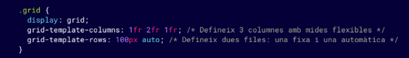
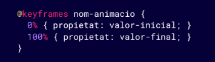

INDEX
Torna a l'index principal
CSS Avançat: Introducció
A mesura que els projectes web es tornen més complexos, l’ús del CSS també ha d’evolucionar per oferir solucions més adaptatives, eficients i organitzades. El CSS avançat no només se centra en dissenyar una pàgina web atractiva, sinó també en assegurar-se que aquesta pàgina funcioni bé en diversos dispositius, sigui fàcil de mantenir i estigui optimitzada per a un rendiment òptim.
Importància del disseny adaptable i optimitzat
Un dels pilars del CSS avançat és el disseny responsive, que permet que les pàgines web s'adaptin a diferents mides de pantalla i dispositius. Aquesta tècnica és cada cop més important a causa de l'augment de l'ús de dispositius mòbils. Per aconseguir un disseny adaptatiu, el CSS avançat incorpora tècniques com:
Media Queries avançades
Unitats relatives i flexibles
Layouts responsius amb Flexbox i Grid
Millors pràctiques d'organització del CSS
A mesura que els projectes es fan més grans, és essencial mantenir una bona organització del codi CSS per evitar que es torni difícil de gestionar i mantenir. A continuació, algunes millors pràctiques per a l'organització del CSS en projectes avançats:
1. Modularització del CSS:
a. Dividir el codi CSS en fitxers més petits i temàtics
b. Arquitectura CSS escalable (SMACSS, BEM)
2. Pre-processadors CSS:
a. Sass o LESS
3. Optimització del CSS:
a. Minificació del CSS
b. Carregament asíncron del CSS
4. Utilització de frameworks CSS:
a. Bootstrap
b. Tailwind CSS
Selectors avançats en CSS
Selectors d'atribut
Els selectors d'atribut permeten aplicar estils als elements HTML que contenen un determinat atribut o valor d'atribut. Són especialment útils per estilitzar elements de formularis o en casos en què utilitzis atributs personalitzats.
Selectors pseudo-element
Els pseudo-elements permeten aplicar estils a una part específica d'un element, com el seu contingut abans o després, o una línia de text. Els pseudo- elements més comuns són ::before i ::after.
::before: Afegeix contingut o estils abans del contingut real d'un element.
::after: Afegeix contingut o estils després del contingut real d'un element.
Selectors combinats
Els selectors combinats permeten seleccionar elements que tenen una relació específica amb altres elements dins del document. Els combinadors més comuns són:
Combinador de descendents ( )
div p {
color: red;
}
Això aplica el color vermell a tots els paràgrafs (<p>) que són descendents de qualsevol element <div>.
Combinador de fills directes (>)
Selecciona només els fills directes d'un element pare.
div > p {
color: blue;
}
En aquest cas, només els paràgrafs que són fills immediats d'un <div> tindran el text de color blau. Els nets o altres descendents no es veuran afectats.
Combinador de germans adjacents (+)
Selecciona l'element que està just després d'un altre element germà..
h1 + p {
font-weight: bold;
}
Aquest exemple fa que el primer paràgraf (<p>) que segueix directament un títol (<h1>) es mostri en negreta.
Combinador de germans generals (~)
Selecciona tots els germans que segueixen un element determinat dins del mateix pare.
h2 ~ p {
color: gray;
}
Aquest exemple fa que tots els paràgrafs (<p>) que segueixen un <h2> dins del mateix contenidor tinguin el text de color gris.
Selectors pseudo-classe
Les pseudo-classes són selectors que s'utilitzen per aplicar estils a un element en un estat o condició particular. Això permet canviar l'estil d'un element quan l'usuari hi interactua o quan l'element compleix certs criteris.
:hover: Aplica estils quan l'usuari passa el ratolí per sobre de l'element.
:nth-child(): Selecciona elements en funció de la seva posició entre els seus germans.
:first-of-type: Selecciona el primer element del seu tipus dins del seu pare.

:not(): Selecciona tots els elements excepte aquells que coincideixin amb el selector especificat.
Fonts i tipografia avançades
Tipografies web amb @font-face
La regla @font-face permet utilitzar fonts personalitzades que no estan disponibles al sistema de l'usuari. Això significa que pots carregar fonts específiques des del teu servidor o des d'una font externa com Google Fonts, garantint una coherència tipogràfica entre tots els usuaris, independentment del dispositiu o navegador que utilitzin.
Control avançat de tipografia
A més de definir fonts personalitzades, CSS ofereix propietats avançades per controlar altres aspectes tipogràfics, com l'espai entre lletres, el gruix de la font o l'alçada de les línies.
Propietat letter-spacing
La propietat letter-spacing permet ajustar l'espai entre les lletres d'un text, fent que el text es vegi més comprimit o espaiat.
Propietat line-height
La propietat line-height controla l'alçada de les línies de text. Una alçada de línia més gran augmenta l'espai entre les línies, cosa que pot millorar la llegibilitat.
Propietat font-weight
La propietat font-weight controla el gruix del text. A més dels valors normal i bold, es poden utilitzar valors numèrics entre 100 (molt prim) i 900 (molt gruixut), oferint més flexibilitat.
Propietat font-style
La propietat font-style permet definir si el text es mostrarà en estil normal, cursiva o obliqua. És útil per donar èmfasi al text.
Propietat text-transform
Aquesta propietat permet canviar la capitalització del text, convertint-lo tot en majúscules, minúscules o capitalitzant la primera lletra de cada paraula. uppercase: Converteix tot el text en majúscules. lowercase: Converteix tot el text en minúscules. capitalize: Capitalitza la primera lletra de cada paraula.
Ús del Web Open Font Format (WOFF)
WOFF i WOFF2 són formats de font comprimits dissenyats específicament per a ús web. Aquests formats proporcionen una compressió més eficient que els formats tradicionals, millorant el temps de càrrega de les pàgines sense perdre qualitat tipogràfica. És recomanable utilitzar WOFF2 quan sigui possible, ja que és el format més modern i optimitzat.
Layouts amb Flexbox i Grid
Flexbox
Casos comuns per Flexbox:
1. Quan vols alinear elements en fila o columna, com
botons en una barra de navegació o imatges en una
galeria.
2. Quan vols distribuir l'espai entre elements en una fila
(per exemple, centrant un element o espaiant-los
uniformement).
3. Quan els elements han de créixer o reduir-se per
omplir l'espai disponible, com en una barra lateral o
una fila de cartes.
Grid
Casos comuns per CSS Grid:
1. Quan vols crear una pàgina amb una estructura
complexa (com una pàgina amb capçalera, barra
lateral, contingut principal i peu de pàgina).
2. Quan tens un disseny en format de quadrícula
amb files i columnes, com un tauler de fotos o un
disseny de cartes de productes.
3. Quan vols controlar exactament on va cada
element en la quadrícula (pots col·locar elements
en qualsevol cel·la de la quadrícula).
Flexbox avançat: alineació, flex-shrink, align-self
Flexbox és una eina molt flexible per crear dissenys en fila o columna, on els elements s’alineen i ajusten automàticament segons l’espai disponible.
flex-shrink:
Controla com es redueix la mida d’un element quan no hi ha prou espai disponible. Valors més grans permeten que l'element es redueixi més.
align-self:
Permet que un sol element en un contenidor flex tingui una alineació diferent a la resta d’elements. Els valors poden ser flex-start, flex-end, center, baseline o stretch.
Grid Layout: creació de quadrícules
CSS Grid Layout és una eina més potent que Flexbox quan es tracta de crear layouts en dues dimensions (filera i columna). Grid permet col·locar elements en una quadrícula amb molta precisió, controlant la mida de les files i columnes, i permetent que els elements s’ajustin a l’espai disponible.
grid-template-columns i grid-template-rows:
Defineixen el nombre i la mida de les columnes i files dins del contenidor grid.
grid-column i grid-row:
Permeten que unelement ocupi diverses columnes o files dins de la quadrícula.
gap:
Defineix l'espai entre les files i columnes de la quadrícula.
Ús combinat de Flexbox i Grid
Tot i que Flexbox i Grid es poden utilitzar per separat, sovint és útil combinar-los per obtenir el millor de tots dos. Per exemple, pots utilitzar Grid per definir la disposició general d'una pàgina (files i columnes) i utilitzar Flexbox dins d'algunes àrees per ajustar l'alineació dels elements.
1. El layout general s'estructura amb Grid, dividint la
pàgina en columnes.
2. Dins d'una de les cel·les del Grid, s'utilitza Flexbox per
alinear els elements en una fila

Popover API
La Popover API és una funcionalitat recent que permet als desenvolupadors crear contingut emergent (popovers) de manera nativa, utilitzant només HTML i CSS, sense necessitat de JavaScript. Aquesta API facilita
Atributs HTML rellevants
popover: Atribut global que designa un element com a popover.
"auto" (per defecte): El popover es mostra i s'oculta automàticament.
"manual": El control de la visibilitat del popover es gestiona manualment.
popovertarget: Atribut que especifica l'ID de l'element popover que es controlarà.
popovertargetaction: Defineix l'acció a realitzar sobre el popover.
Exemple
Aquest és un popover utilitzant la Popover API!
Variables CSS (Custom Properties)
Les variables CSS, també conegudes com Custom Properties, permeten definir valors reutilitzables dins d'un document CSS. Aquesta característica facilita molt la gestió i manteniment de grans fulls d'estil, ja que pots centralitzar valors com colors, mides i espaiats, i reutilitzar-los en diverses regles CSS. Si necessites fer un canvi en algun d’aquests valors, només hauràs de modificar la variable en un lloc, i el canvi es propagarà a totes les parts del document on s'utilitza.
Definir i utilitzar variables CSS
Les variables CSS es defineixen dins de qualsevol selector utilitzant el prefix --. És habitual definir-les en el selector :root per tal que estiguin disponibles globalment en tot el document.
Beneficis de les variables en grans projectes
L’ús de variables és especialment útil en projectes grans o complexos, on necessites garantir la consistència en colors, mides, fonts i altres estils. Canviar aquests valors en múltiples llocs manualment pot ser tediós i propens a errors. Les variables centralitzen aquests valors en un sol lloc.
Avantatges:
Mantenibilitat: Pots modificar fàcilment valors globals com els colors o les mides canviant només una variable.
Reutilització: Les mateixes variables es poden utilitzar en qualsevol lloc del full d’estil, estalviant temps i espai.
Consistència: L'ús de variables assegura que tots els elements que depenen d'una variable tinguin el mateix
estil.
Variables CSS amb valors per defecte
Pots proporcionar un valor per defecte a les variables CSS en cas que no estiguin definides. Això és útil si vols assegurar-te que el disseny funcioni fins i tot si la variable falla o no es troba.
Exemple complet amb variables CSS:
Animacions i transicions en CSS
Ús de transicions (transition)
Les transicions CSS permeten que els canvis en les propietats d'un element, com el color, l'opacitat, la mida o la posició, siguin suaus en lloc de bruscos. Quan una propietat canvia, pots definir la velocitat del canvi utilitzant transition.
Sintaxi bàsica de transition:
Propietat: La propietat CSS que vols animar (ex. background-color, transform,
opacity, etc.).
Durada: Quant de temps durarà la transició (ex. 0.5s, 2s).
Funció de temporització:Controla com serà la velocitat de la transició (ex. ease,
linear, ease-in-out).
Retard: Opcional, defineix quant de temps trigarà a començar la transició (ex. 1s).
Propietats de transició (transition-property)
Si vols animar diverses propietats simultàniament, pots especificar-les individualment amb transition-property o utilitzar all per aplicar la transició a totes les propietats que canviïn.
Animacions clau amb @keyframes
Les animacions en CSS permeten crear moviments més complexos que les transicions. Utilitzen la regla @keyframes per definir punts intermedis del moviment o canvi de propietat, i s'apliquen a través de la propietat animation.
Sintaxi de @keyframes:
Sintaxi de animation:
Nom de l'animació:El nom de l'animació definida amb @keyframes.
Durada: El temps que durarà l'animació.
Funció de temporització: Controla la velocitat de l'animació (linear, ease, etc.).
Retard: Opcional, quant de temps trigarà a començar l'animació.
Cicles: Quantes vegades es repetirà l'animació (infinite per repetir-la indefinidament).
Direcció: Opcional, si l'animació es juga de manera normal o inversa (normal, reverse,
alternate).
Propietats d'animació (animation-duration, animation-delay)
Les propietats d'animació et permeten personalitzar com es comporta una animació. Les més importants són:
animation-duration: Controla quant de temps dura l'animació.
animation-delay:Defineix un retard abans quel'animació comenci.
animation-iteration-count: Controla quantes vegades es repetirà l'animació (1, 3, infinite).
animation-direction: Defineix si l'animació es juga capendavant (normal), cap enrere (reverse) o alterna (alternate).